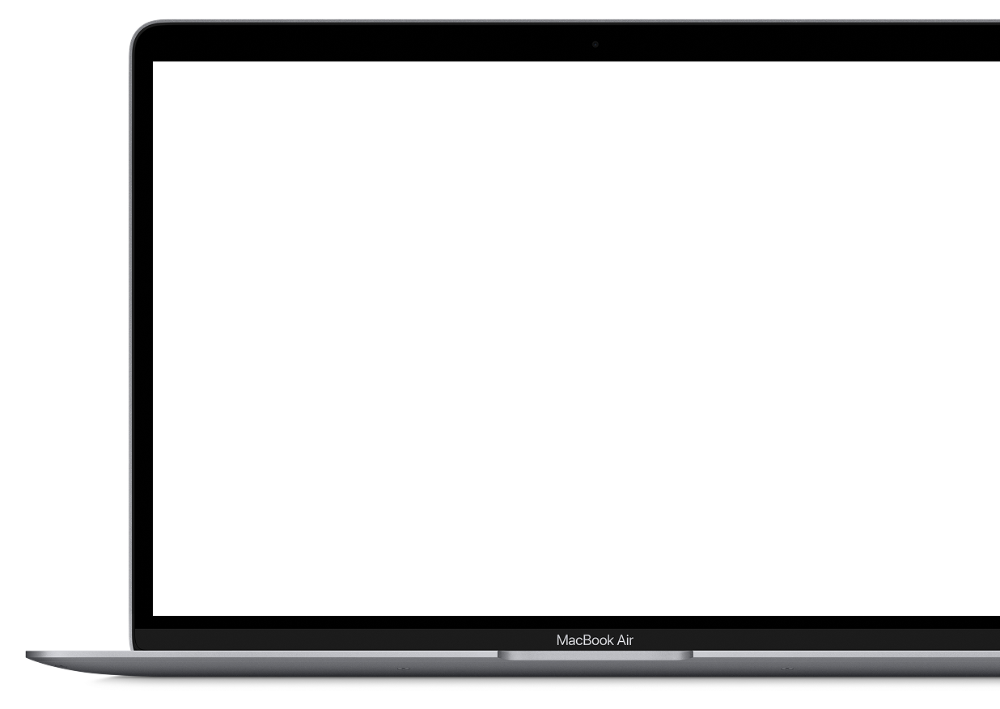
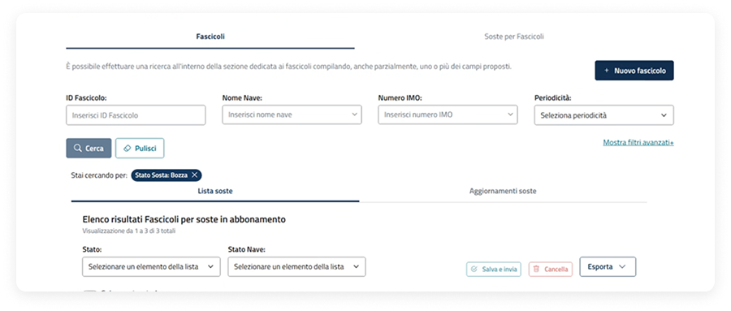
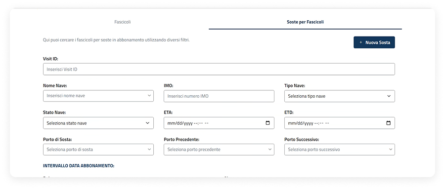
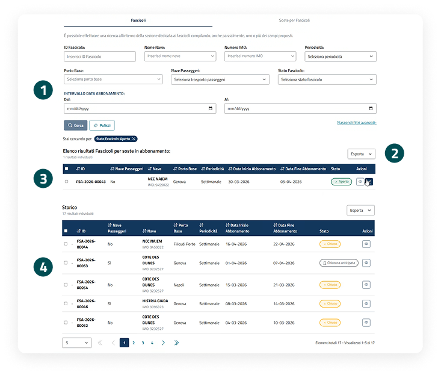
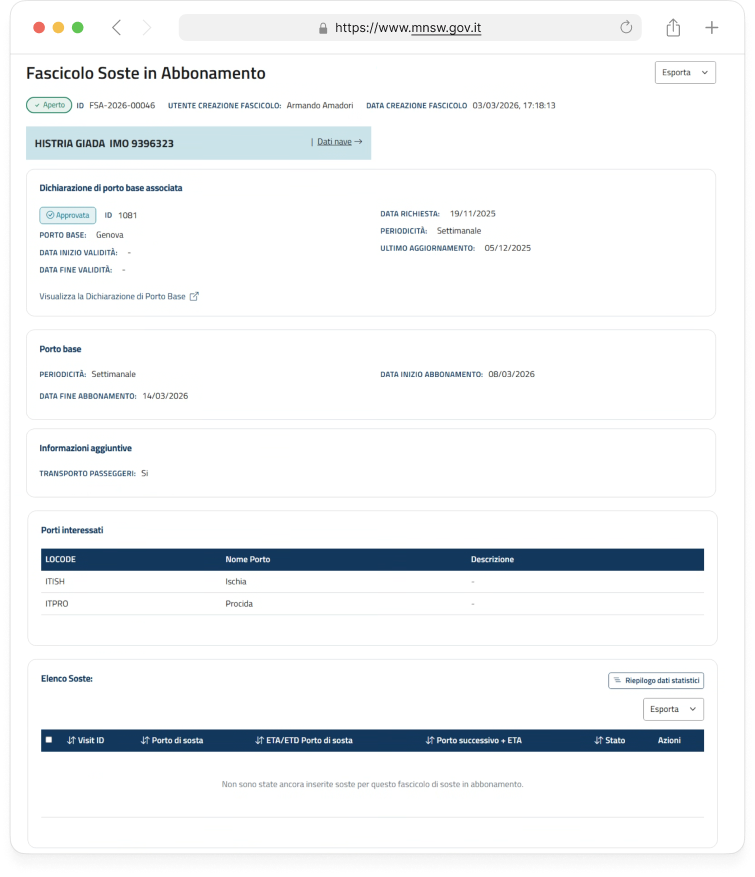
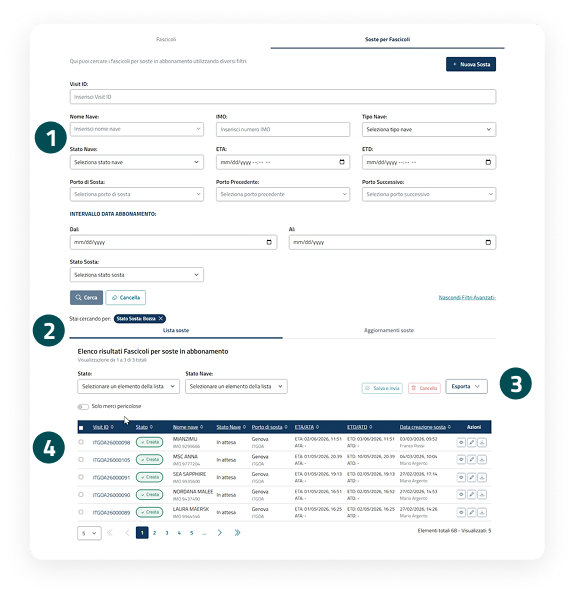
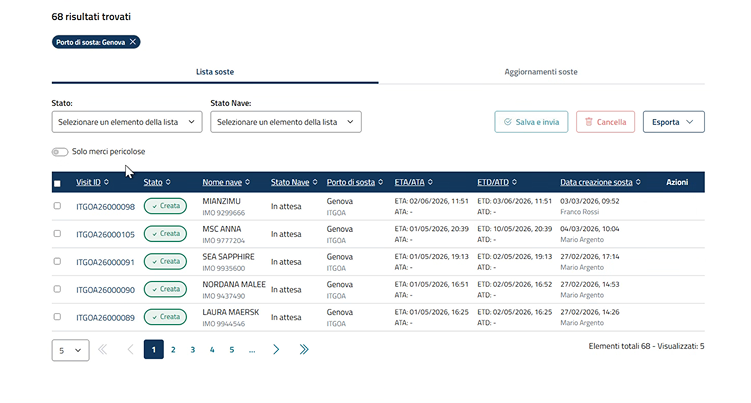
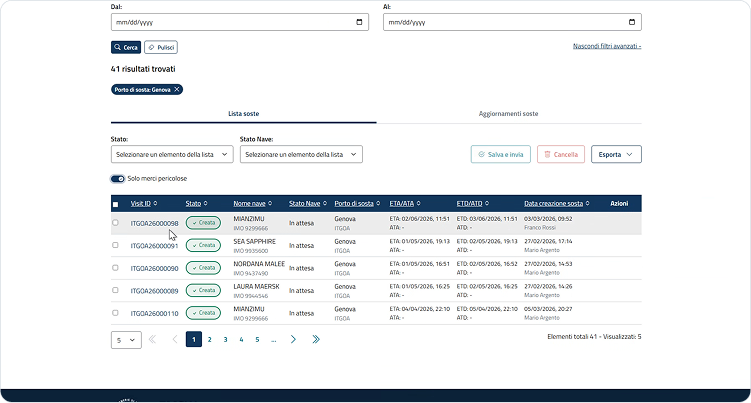
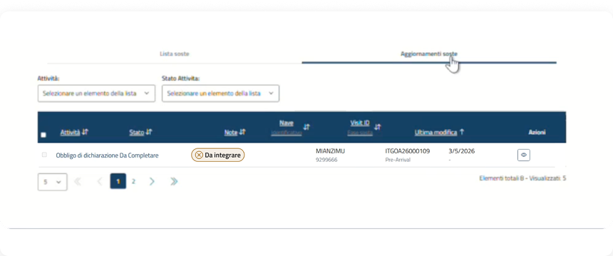

Gestione Fascicoli in abbonamento
Il portale delle Smart Guide è uno spazio digitale che raccoglie risorse pratiche e aggiornate in un unico ambiente intuitivo. Strumenti chiari e organizzati per organizzarti e trovare subito ciò che ti serve.
01.
Ricerca e consultazione fascicoli e soste in abbonamento
Una panoramica sui flussi di ricerca e consultazione fascicolo per soste in abbonamento.
Punto di accesso
La voce di menù
Dalla dashboard è possibile accedere alle principali sezioni tramite le voci di menu.
Menu a tendina
Cliccando sulla voce "Gestione e Consultazione" viene visualizzato un menu a tendina, da cui è possibile accedere alle "Fascicoli Soste in Abbonamento".

Ricerca tra Fascicoli e Soste in abbonamento
In questa pagina l'utente può ricercare, visualizzare ed esportare l'elenco dei fascicoli e delle soste in abbonamento.
Ricerca Fascicoli
È la procedura che consente di ricercare i Fascicoli per soste in abbonamento.

Ricerca soste in abbonamento
È la procedura che consente di ricercare le soste inserite all'interno dei fascicoli.

Ricerca e consultazione: Fascicoli
Funzionalità in pagina
È possibile avviare la ricerca utilizzando i filtri disponibili oppure applicare criteri aggiuntivi per affinare i risultati. La schermata è suddivisa nelle seguenti sezioni:

Sezione filtri
La sezione Filtri consente di ricercare i fascicoli attraverso dei filtri base come: ID Fascicolo, Nome Nave, Numero IMO o Periodicità. Sono disponibili filtri avanzati per affinare come Porto Base, Nave Passeggeri, Stato fascicolo e la ricerca per intervallo temporale.
Esportazione
L'unica azione disponibile al di sopra della tabella è l'esportazione.
Visualizzazione risultati tramite tabella
I risultati della ricerca vengono presentati in una tabella, mostrando le informazioni principali e le azioni disponibili.
Storico soste
I risultati della ricerca vengono presentati in una tabella, mostrando le informazioni principali e le azioni disponibili.
Ricerca e consultazione fascicolo per soste in abbonamento
Dettaglio del fascicolo
All'interno della pagina sono consultabili le seguenti informazioni:
- Nave e relativo identificativo
- Dichiarazione di porto base associata con relativo link per accedere al dettaglio
- Dati abbonamento
- Informazioni aggiuntive
- Porti interessati
- Elenco soste

Ricerca e consultazione: Soste in abbonamento
Funzionalità in pagina
È possibile avviare la ricerca utilizzando i filtri disponibili oppure applicare criteri aggiuntivi per affinare i risultati. La schermata è suddivisa nelle seguenti sezioni:

Sezione filtri
La sezione Filtri consente di ricercare le soste secondo diversi criteri. Sono disponibili filtri base e filtri avanzati per affinare la ricerca.
Visualizzazione di "Lista soste" o "Aggiornamento soste"
È possibile scegliere di visualizzare i risultati di ricerca della lista soste e degli aggiornamenti delle soste.
Filtri e azioni sulla tabella
I risultati della ricerca possono essere filtrati per "Attività" e "Stato Attività". Selezionando una o più task è possibile salvare e inviare, cancellare ed esportare. Infine, è possibile filtrare le soste per navi che trasportano merci pericolose tramite l'apposito pulsante.
Visualizzazione soste tramite tabella
I risultati della ricerca vengono presentati in una tabella, mostrando le informazioni e azioni principali.
Focus sull'azione di visualizzazione delle merci pericolose (Lista soste)
È possibile visualizzare o nascondere le merci pericolose tramite l'interazione con il pulsante evidenziato.
Di default il pulsante sarà disattivato, saranno visualizzate tutte le soste.

Se il pulsante è attivo, saranno mostrate solo le soste per quelle navi che dichiarano di trasportare merci pericolose.

Visualizzazione risultati in tabella: Lista Soste e Aggiornamento soste
I risultati di ricerca delle soste in abbonamento, possono essere visualizzati tramite tabella secondo due modalità:
Lista Soste
È l'elenco di tutte le soste presenti a sistema, in relazione all'utente che sta operando, sulle quali è possibile accedere al dettaglio e svolgere diverse azioni.

Aggiornamenti soste
È un elenco di attività che l'utente deve svolgere. Sarà possibile filtrare i risultati in tabella per "Attività" e "Stato Attività".
